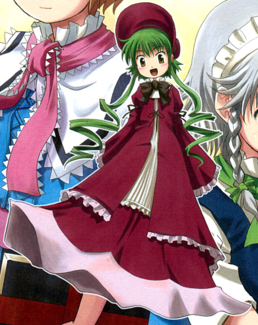

- Welcome to Touhou Wiki!
- Please register to edit. For assistance, check in with our Discord server or IRC channel.
Fan-made characters/Maybell
| メイベル Maybell | |
|---|---|
|
 Maybell in Thought of Dolls 2
| |
| Species |
Independent Doll |
| Abilities |
Can "hear" and "speak" to objects |
| Occupation |
Looking for someone |
| Location |
Alice's house in the Forest of Magic |
Appearances | |
| Print Works | |
| |
Maybell (メイベル Meiberu) is a fan-made character and an original character created by Haniwa (葉庭).
Character Basis[edit]
Name[edit]
Her name is Maybell (メイベル). The name Maybell is from Old French and it means "lovely" or "to love". It is very rare in modern English for a girl to be called "Maybell".
Appearance[edit]
Maybell's design is probably based on Shinku from the Rozen Maiden series.[citation needed] She has brown eyes and green hair in two long curly tails. She is dressed as a Victorian-era doll.
Story[edit]
Thought of Dolls[edit]
- Main article: Thought of Dolls comic
Maybell appears out of nowhere and forgets everything she remembered, even who she is. The only thing she did remember is that she is looking for someone. Marisa Kirisame was walking about finding some rare items and she appeared to have found Maybell. She took her home and locked her in a cupboard because she was loud. Maybell then found a magic stone and escaped with it.
She's now flying in the magic stone that Marisa has been noted to look for, unaware that it is her stone in the first place and that Maybell is hiding inside it. She bumps into Marisa once again, along with Alice Margatroid. Maybell then has a danmaku fight with the two and later gets defeated. Alice and Maybell then greet each other, while Maybell ask Alice to give her a name. They then go home and Maybell seems to have found friends.
Thought of Dolls 2[edit]
- Main article: Thought of Dolls 2 comic
Maybell and Alice had a fight, both agreeing Alice is not the person Maybell is looking for. When she leaves Alice's home, she then was in real danger. luckily, she was taken to the Scarlet Devil Mansion by Sakuya Izayoi. The next day, she returned to Alice's house to apologise, then everything was back to 'normal'.
Thought of Dolls 3[edit]
- Main article: Thought of Dolls 3 comic
Maybell, Alice and Marisa teamed up to investigate a strange magical phenomenon near the forest. The 3 got discovered and got attacked by a mysterious humanoid robot girl, and it trapped them in a bound field. Maybell used her power, namely the ability to "hear" and "speak" to objects to rescue her friends.
Relationships[edit]
- Alice Margatroid
Alice Margatroid is the current owner of Maybell.
- Marisa Kirisame
Marisa Kirisame is Maybell's 'enemy'.
- Sakuya Izayoi
Sakuya Izayoi first found Maybell about to get eaten by Rumia. She took Maybell back to the Scarlet Devil Mansion for a place to stay.
Additional Information[edit]
- She's only a strong doll when she has Marisa's 'magic stone'.
- It is known that ZUN is aware of this character because of his involvement in Touhou Unreal Mahjong and with Maybell's appearance. ZUN has even stated that he likes this character[Ref. Needed].
- In Touhou Hisoutensoku, Iku Nagae and Suwako Moriya seems to have alternate color palettes that somewhat resembles Maybell.
- She's one of the earliest known fan-made characters.
- The reason why Haniwa would want to create an independently-moving doll in the Touhou Project would be because Alice can't create an independent doll for herself.
Fandom[edit]
Maybell is quite a noteworthy fan-made to be noticeable within the Touhou Project – even ZUN knows her. This has gone to the extent where she appears in derivative works, such as in the flash video Artificial Children by IOSYS, being the only doll to cry. Most likely because of this, she's also made an appearance in Touhou Unreal Mahjong.
- Hina's design: There's a rumor that Hina Kagiyama's design was inspired by Maybell.
Official Sources[edit]
<toggledisplay showtext="Show sources" hidetext="Hide sources">
- 2004/04/18 Thought of Dolls
- 2005/05/04 Thought of Dolls 2
</toggledisplay>